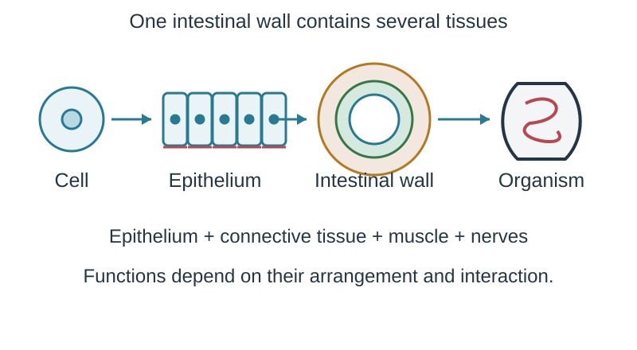
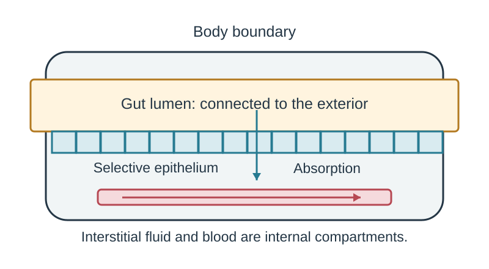
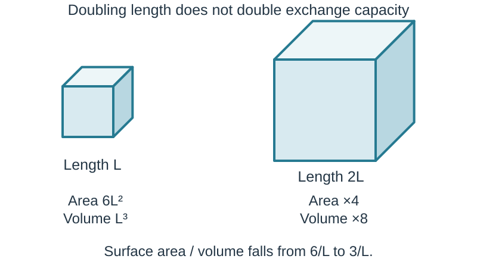
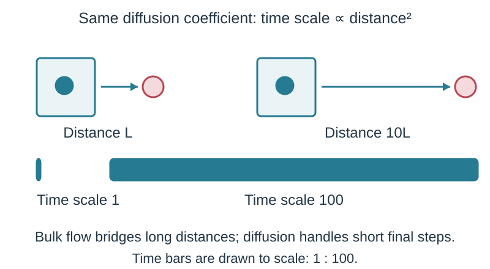
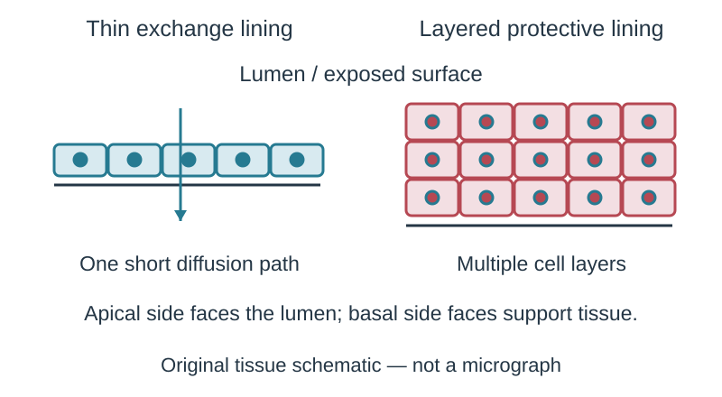
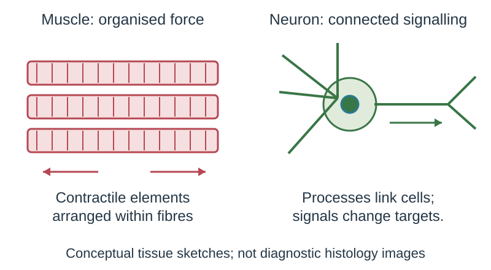
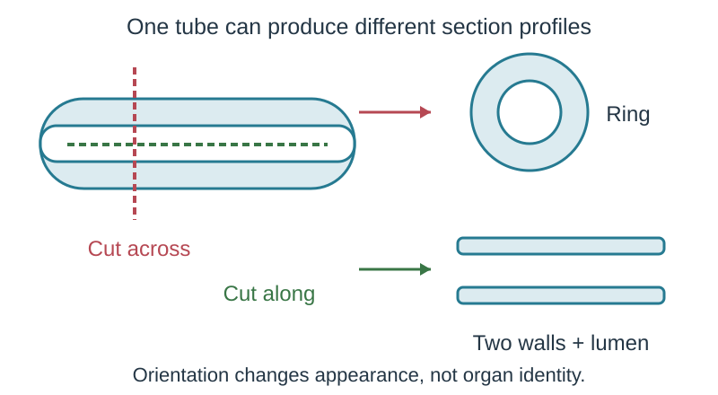
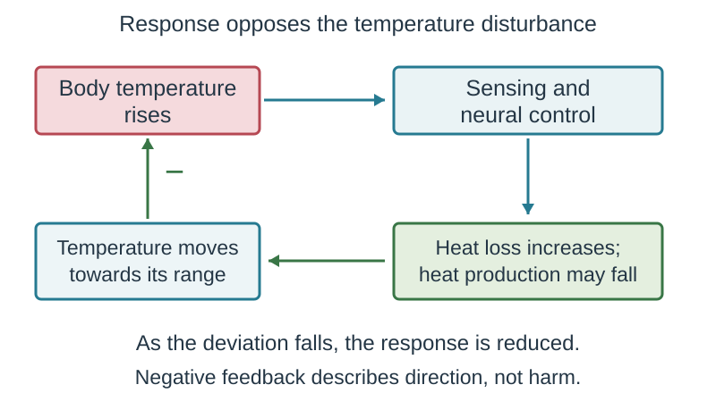
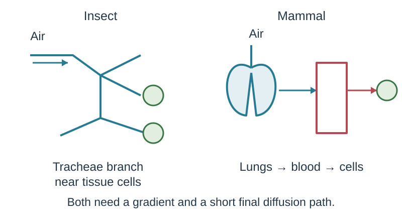

Week 1 — How an animal body is built and kept stable
Animal and Plant Physiology
About this lecture
An amoeba takes oxygen straight from the pond water around it. A mitochondrion deep in a mouse’s thigh muscle is millimetres from the nearest air. How does an animal body get oxygen and food to every cell, and keep conditions around those cells stable? That question runs through the whole animal half of the course, and today we set up the tools to answer it.
Organisation: cells → tissues → organs → organ systems, and the internal environment that cells actually live in.
The physical problem: surface area, volume and diffusion distance. These explain why large animals need special exchange surfaces and transport.
The building materials: the four primary tissue types, and how to recognise them in a section.
Keeping it stable: homeostasis and feedback control.
Many solutions: response, acclimation and adaptation, with an insect and a mammal compared.
The problem: one cell versus a whole animal
Amoeba
Mouse
Size
~0.5 mm
~80 mm
Distance from O₂ source to mitochondria
a few µm
up to several mm
How O₂ arrives
diffusion across the cell membrane
ventilation → lungs → blood → tissue
Surroundings of each cell
pond water
interstitial fluid
Every cell has the same needs: O₂ and fuel in, CO₂ and wastes out, suitable temperature and ion concentrations.
The amoeba meets them directly from its environment.
A mouse cannot. Most of its cells never touch the outside world.
So what does a mouse body consist of, and where do its cells actually live?
Levels of organisation
Cell: the smallest living unit.
Tissue: similar cells plus extracellular material, with one function.
Organ: several tissues working together, e.g. the intestine.
Organ system: organs with a shared task, e.g. the digestive system.
Organism.
Each level has properties that the level below lacks: a single muscle cell cannot pump blood, but cardiac muscle in a heart can.

The internal environment
Body cells are bathed in interstitial fluid, not in the outside world.
Blood plasma exchanges with interstitial fluid across capillary walls.
The gut lumen is continuous with the exterior: food in the gut is still outside the body.
To enter the body, a substance must cross an epithelium.
Claude Bernard (1865): the milieu intérieur.

The internal environment must be supplied from outside, across exchange surfaces.
Why size is a problem: surface area and volume
For a cube with side L:
A = 6L^2, \qquad V = L^3, \qquad \frac{A}{V} = \frac{6}{L}
L
A
V
A/V
1 mm
6 mm²
1 mm³
6 mm⁻¹
2 mm
24 mm²
8 mm³
3 mm⁻¹
4 mm
96 mm²
64 mm³
1.5 mm⁻¹
Demand (metabolism) scales roughly with volume.
Supply across the body surface scales with area.
Double the size: 4× the area must serve 8× the volume.

Why size is a problem: diffusion distance
Time to diffuse a distance x: \quad t \approx \dfrac{x^2}{2D}
For O₂ in water, D \approx 2 \times 10^{-9} m² s⁻¹:
Distance
Time
10 µm (one cell)
~0.03 s
1 mm
~4 min
1 cm
~7 h
10× the distance → 100× the time.
Diffusion is fast enough within a cell, and far too slow across a body.

So how does a large animal get O₂ to a cell that is centimetres from the air?
Three solutions
Enlarge the exchange surface. Fold, branch or subdivide it: alveoli (~100 m² in a human lung), gill lamellae, intestinal villi.
Make the barrier thin. The air–blood barrier in a mammalian lung is less than 1 µm thick.
Use bulk flow over long distances. Ventilation moves air or water to the surface; circulation moves blood around the body. Bulk flow is fast over any distance.
Diffusion is still needed for the last few micrometres: from capillary to cell.
Building these solutions needs specialised materials: the tissues.
The four primary tissue types
Tissue
Defining feature
Main functions
Example
Epithelial
Sheets of tightly joined cells; little matrix
Boundaries, exchange, secretion, protection
Lining of gut, alveoli, skin
Connective
Cells scattered in abundant extracellular matrix
Support, binding, transport
Tendon, bone, cartilage, blood
Muscle
Elongated cells with contractile proteins
Force and movement
Skeletal muscle, heart, gut wall
Nervous
Neurons with long processes, plus glia
Signalling and integration
Brain, nerves
Every organ is built from these four. We now take them one at a time.
Epithelium: the exchange surface and the barrier
Simple squamous (one thin layer): short diffusion distance, so suited for exchange (alveoli, capillaries).
Stratified squamous (many layers): suited for protection (skin, oesophagus).
Simple columnar (tall cells): suited for absorption and secretion (intestine).
Each cell has an apical side (facing the lumen) and a basal side (on the basement membrane). Different transport proteins on each side make directional transport possible.

Connective tissue: defined by its matrix
Cells are scattered in an extracellular matrix of fibres and ground substance.
The matrix determines the properties:
Tissue
Matrix
Property
Tendon
Parallel collagen fibres
Tensile strength
Cartilage
Collagen in a firm gel
Resilience
Bone
Collagen mineralised with calcium phosphate
Rigidity
Blood
Fluid plasma
Transport
Connective tissue also carries the blood vessels that supply epithelia.
Muscle and nervous tissue
Skeletal
Cardiac
Smooth
Striated
yes
yes
no
Cells
long fibres
branched
spindle
Nuclei
many
one
one
Control
voluntary
involuntary
involuntary
Muscle provides the pumps of bulk flow: the heart, the breathing muscles, the gut wall.
Neurons receive, integrate and transmit signals; glia support them.

Reading a tissue section
A section is a thin 2-D slice through a 3-D structure.
A tube cut across gives a ring.
A tube cut lengthwise gives two parallel walls.
A tube cut obliquely gives an oval.
So identify a structure from its tissue layers, cell shapes and scale, not from the outline alone.

Putting the tissues together: the intestinal wall
Layer (lumen outwards)
Tissue
Role in the exchange problem
Mucosa
Simple columnar epithelium on villi
Large, thin absorbing surface (solutions 1 and 2)
Submucosa
Connective tissue with blood vessels
Carries absorbed nutrients away (solution 3)
Muscularis
Smooth muscle, two layers
Mixes and moves the contents (bulk flow in the lumen)
Throughout
Nervous tissue (enteric nervous system)
Coordinates secretion and movement
One organ, four tissues, all three exchange solutions. But an organ like this only works if its surroundings stay within narrow limits.
Homeostasis: stability by continual work
Homeostasis: maintaining internal conditions within a range compatible with life, despite disturbances.
Regulated variables include body temperature, blood glucose, blood pH, plasma osmolarity, and blood O₂ and CO₂.
Stable does not mean static. Blood glucose stays near 5 mM while glucose is continuously absorbed and consumed. Input = output is a dynamic balance.
Maintaining it costs energy: ion pumps alone use a large share of resting metabolism.
How does the body detect and correct a deviation?
Negative feedback
Regulated variable: body temperature.
Disturbance: exercise raises it.
Sensor: thermoreceptors.
Control centre: hypothalamus, which compares with the set point.
Effectors: sweat glands and skin blood vessels.
Response: more heat loss, so temperature falls back.
The response opposes the deviation. This is negative feedback.

Positive feedback and two common errors
Positive feedback amplifies the change. It needs an end point.
Oxytocin and uterine contractions during birth (ends at delivery).
Blood clotting cascade (ends when the wound is sealed).
Na⁺ channel opening during an action potential (ends with channel inactivation, A5).
Common errors:
“Negative” and “positive” describe the direction of the loop, not whether it is good or bad.
The effector (e.g. sweating) is not the regulated variable (temperature).
Three time scales of change
Time scale
Name
Example
Heritable?
Seconds–minutes
Acute response
Ventilation rises when running starts
No
Days–weeks
Acclimation (lab) / acclimatisation (field)
Fish adjusts its enzymes after weeks in warmer water
No
Generations
Evolutionary adaptation
A population in hypoxic water evolves larger gills
Yes
Acute responses and acclimation are changes within an individual.
Adaptation is a change in a population, by natural selection.
That a trait is useful does not by itself show how it evolved.
Back to the opening problem: insect versus mammal
Both breathe air, and both need O₂ within diffusion range of every mitochondrion.
Insect: air-filled tracheae branch directly to the tissues. The blood plays little part in O₂ transport.
Mammal: lungs exchange O₂ into the blood; the heart pumps it to capillaries near every cell.
Different solutions to the same physics. Neither is more advanced than the other.

Summary
Concept
Key fact
Levels of organisation
cell → tissue → organ → organ system → organism
Internal environment
cells live in interstitial fluid; the gut lumen is outside the body
Surface area : volume
A/V = 6/L for a cube; falls as size increases
Diffusion time
t \approx x^2/2D; 10× distance → 100× time
Three solutions
enlarged surface, thin barrier, bulk flow
Four tissues
epithelial, connective, muscle, nervous
Homeostasis
dynamic maintenance of internal conditions
Negative feedback
response opposes the deviation (sensor → control → effector)
Next (A2 — Nutrition, energy and temperature): the cells now receive O₂ and food. What do they do with them, how much energy does an animal use, and how does temperature change that?